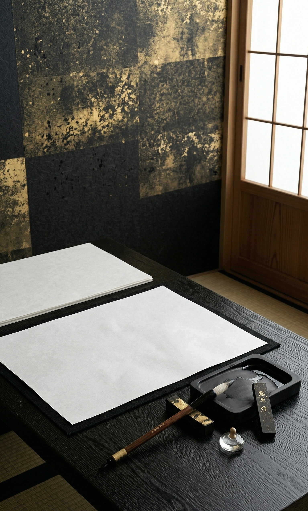
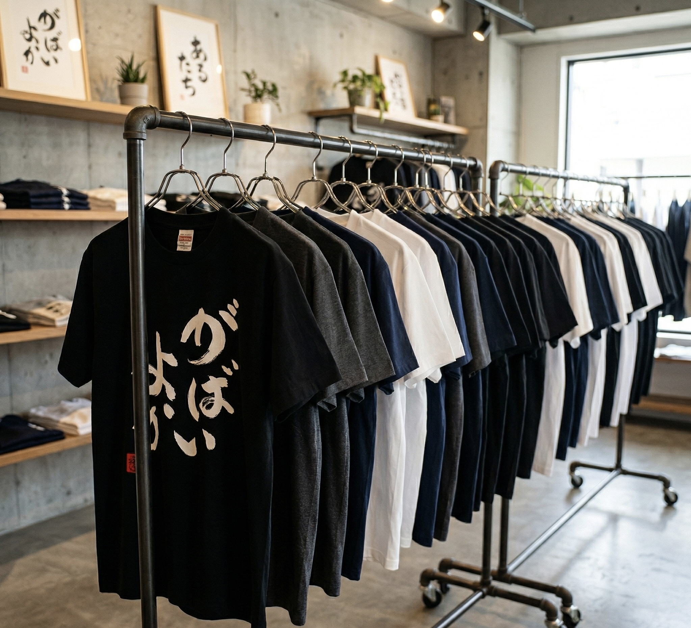
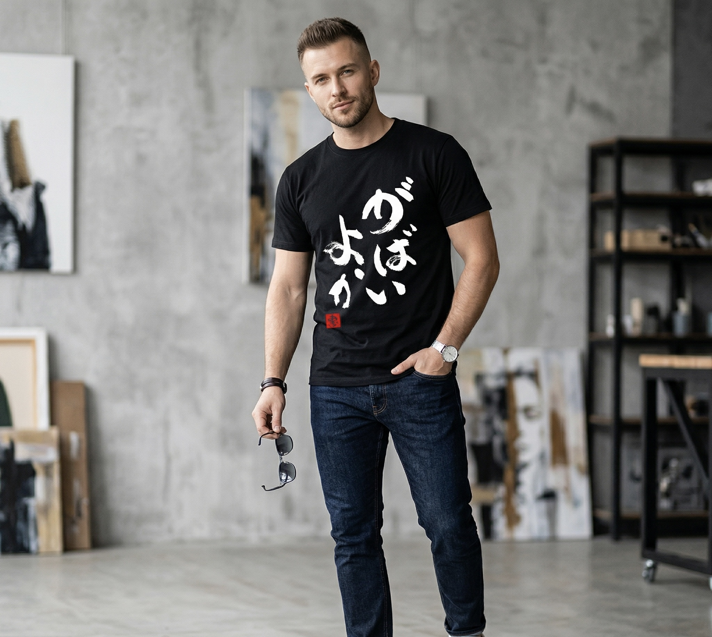
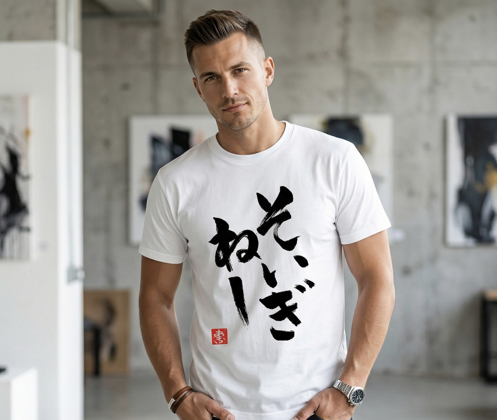
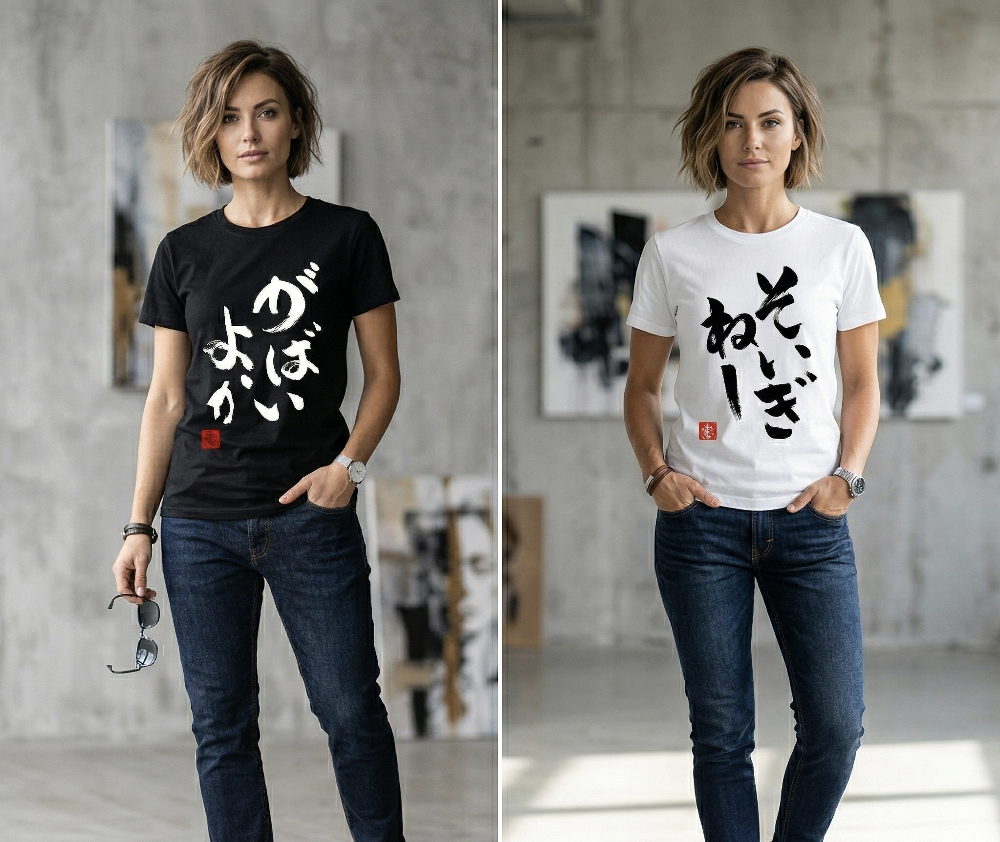
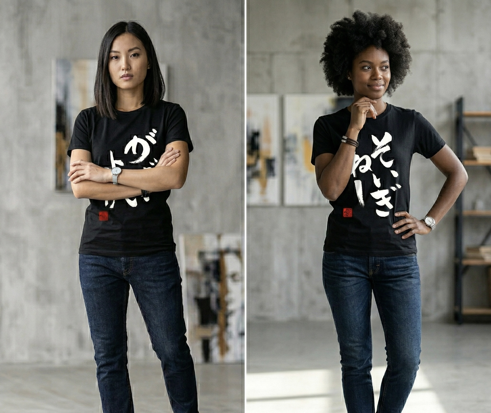

墨に宿る、
魂の躍動。
書の道に、己の全てを注ぐ。
一筆に込めた魂が、世界へと翔ける。
書道作品や筆文字の発信と、
書をデザインしたオリジナルTシャツを
お届けしています。
「書は人なり」
筆先に現れる一本の線には、書く人の生き方がそのまま表れます。
翔来会は、この言葉を胸に、書と向き合い続ける集いです。
書道作品や筆文字を YouTube・Instagram で発信するとともに、 書をデザインに取り入れたオリジナルTシャツをお届けしています。
墨の濃淡、余白の静けさ、力強い線の躍動。
一筆ごとに込めた思いが、見る人の心に何かを灯せたなら、これ以上の喜びはありません。

その書の表現を、日常で身にまとえる形にしたのが、
翔来会のオリジナルTシャツです。
翔来会の息吹を、
あなたの日常に。
書道の力強さと繊細さをデザインに落とし込んだ、
翔来会オリジナルTシャツ。
墨の躍動、余白の美しさ——
書の線をそのまま身にまとう、アートとしての一枚です。
日常にさりげなく溶け込む、凛とした存在感をお届けします。
外部のショップサイト（syoraikai.original-goods.jp）が開きます





翔来会代表・高柳亮が、書道作品や筆文字を通じて、日々の思いやことばを発信しています。